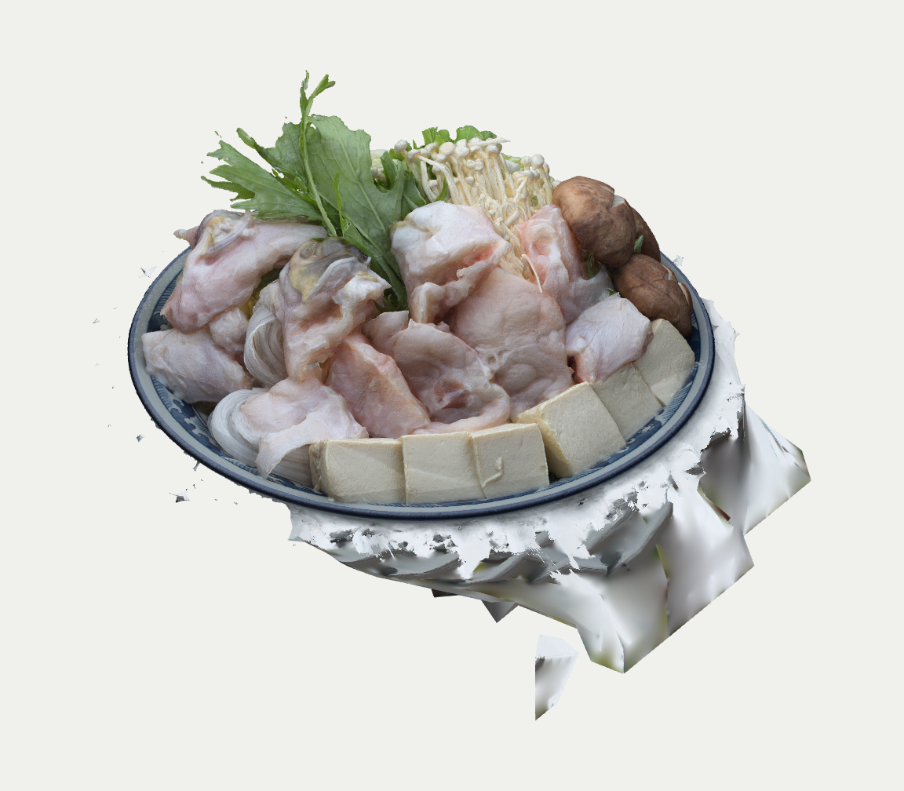

深廣 ／ High Detail
とらふぐ鍋セット色と陰影の3案比較
現状
ふぐのツヤは中、ほかの具材は弱ふぐの影を浅く
ツヤは中のまま、身と皮の影を明るくiPhone採用色に寄せる
具材の明るさ＋0.65段、鮮やかさ106％
全体像を読み込み中…
左右にドラッグすると3案が一緒に回ります。2倍表示で具材をクリックすると、3案とも同じ場所を拡大できます。
見比べるポイント
ふぐの切り身が重なるところで、身の白さ・境目・濡れた光を見比べてください。採用色の案では、豆腐の白い部分に模様が残るか、にんじんや水菜が自然に見えるかも確認できます。
3案とも同じ全体形状と材質範囲を使い、器の色は共通です。右の案は、以前iPhoneで選んだ色設定を今回のHigh Detailの具材に適用しています。